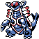

#298
Armaldo
RockBug
Abilities: Battle Armor, Swift Swim, Tough Claws
Base stats BST 500
HP75
Attack125
Defense100
Speed50
Sp. Atk70
Sp. Def80
Evolution
None detected.
Level-up learnset
LevelMoveType
Lv. 1First ImpressionBug
Lv. 1Water GunWater
Lv. 1HardenNormal
Lv. 1ScratchNormal
Lv. 1AccelrockRock
Lv. 9Aqua JetWater
Lv. 12Fury CutterBug
Lv. 15AncientpowerRock
Lv. 18Bug BiteBug
Lv. 21Rock SlideRock
Lv. 24Metal ClawSteel
Lv. 27Water PulseWater
Lv. 31X-ScissorBug
Lv. 35SlashNormal
Lv. 43Knock OffDark
Lv. 47ProtectNormal
Lv. 51Rock BlastRock
Lv. 55Stone EdgeRock
Wild locations
Not found in the parsed wild encounter tables.